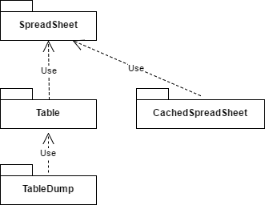
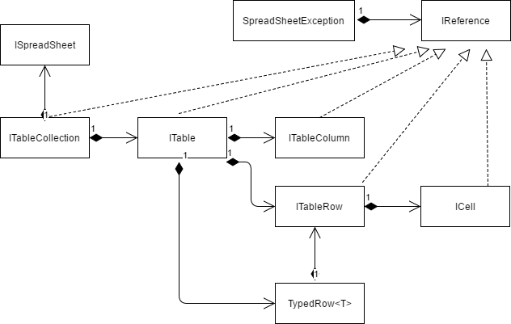

ZuluSpreadSheetYou have to write a application where the end user has to provide some information. Yes, you could use configurations files. But this library is a very sexy alternative!
The library provides a very simple way to access spread sheets. The exceptions contain readable text which eases developers work to provide good feedback to the enduser.
ZuluSpreadSheet using Nuget.zuluspreadsheet_test.ods and place it in the binary-folder.[TableName("TableC")]
class TableC : ITableRowTyped
{
public enum EnumGender { male, female };
public ITableRow TableRow { get; set; }
public readonly string Name = null;
public readonly int Age = 0;
public readonly EnumGender Gender = EnumGender.male;
public readonly double Size = 0.0;
}
static void Main(string[] args)
{
ITableCollection tables = TableCollection.factory("zuluspreadsheet_test.ods");
foreach (TableC row in tables.TypedRows<TableC>())
{
Debug.Print(row.Name + " " + row.Age + " " + row.Gender);
}
}Nearly all objects implement IReference:
public interface IReference
{
/// <summary>
/// A textual representation where the object comes from.
/// TYPE EXAMPLE REFERENCE
/// SpreadSheet "xy.odt"
/// Worksheet Worksheet "test" in "xy.odt"
/// Cell Cell AZ in Worksheet "test" in "xy.odt"
/// </summary>
string Reference { get ; }
/// <summary>
/// For example
/// xy.odt // For a ISpreadSheetReader
/// Configuration // For a IWorksheet
/// Members // For a Table
/// A5 // For a ICell
/// </summary>
string Name { get ; }
/// <summary>
/// For example
/// file 'xy.od' // For a ISpreadSheetReader
/// worksheet 'Configuration' // For a IWorksheet
/// table 'Members' // For a Table
/// cell 'A5' // For a ICell
/// </summary>
string Description { get ; }
}IReference is a human readable reference which allows the enduser to find a element (cell, row, worksheet, ...).
public class SpreadSheetException : Exception
{
public SpreadSheetException( string msg, IReference reference = null ) : base (msg) {}
}This SpreadSheetException extends a Exception and associates a IReference-Object.
If an error occurs in the library, most likely a SpreadSheetException will be thrown.
In most cases, the only thing you have to to is to display the message to the enduser. The enduser will know what has to be done.
Example:
CachedSpreadSheet spreadSheet = new CachedSpreadSheet("test.ods");
ICell cell = spreadSheet["SheetA"]["E13"]
int i = cell.Parse<int>();The above code assumes, that in cell "C5" is an integer. However, if cell "C5" contains "male", this exception will be thrown:
'male' is not a valid integer! Reference: cell 'E13' in worksheet 'SheetA' in file 'excel_openoffice_test.ods'
This message is sufficient for the enduser to be able fix the document.

SpreadSheet implements the access using iterators over worksheets, rows and cells
The interfaces reflect the organisation of OpenOffice-Calc document.
Access is done using iterators.
ISpreadSheetReader reader = SpreadSheetReaderFactory.factory(Filename);
foreach (IWorksheet worksheet in reader.Worksheets)
{
Debug.Print( "Worksheet: " + worksheet.Name);
foreach (IRow row in worksheet.Rows)
{
for (int i = 0; i < row.Columns; i++)
{
ICell cell = row[i];
Debug.Print("Cell: " + cell.String);
int i = cell.Parse<int>();
}
}
}Excel and OpenOffice allow to name cells. This library allows to use this name to acess these cells. Limitation: Ranges of cells are not supported.
SpreadSheet spreadSheet = ...;
string value = spreadSheet.NamedCells["CellName"];
ICell.Parse<T>() allows parsing of many datatypes. An exception is thrown, when parising fails.
| Datatype | Example | Limitation |
|---|---|---|
| int, uint, ... | 12 | None |
| Enum | male | None |
| float, double | 1234.5678 | Difference in precision between OpenOffice and Excel - see Limitations. |
| DateTime | 2017-06-12 | Only works in OpenOffice. |
| others | not tested. |
CachedSpreadSheet caches a SpreadSheet and therefore provides direct access using Worksheet/Row/Column.
CachedSpreadSheet spreadSheet = new CachedSpreadSheet(Filename);
ICell cell = spreadSheet[ "SheetA" ][ "C5" ];
Debug.Print( "Cell: " + cell.String);
Table are defined by Keywords entered into a SpreadSheet.
The above image shows "TableC". These rules apply:
This is a higher-level access to SpreadSheet-Data which eases the access by a program.
Comparision to databases:

The classes represent the structure of the Tables.
The structure above is represented by the structure below:
[TableName("TableC")]
class TableC : ITableRowTyped
{
public enum EnumGender { male, female };
public ITableRow TableRow { get ; set ; }
public readonly string Name = null ;
public readonly int Age = 0;
public readonly EnumGender Gender = EnumGender.male;
public readonly double Size = 0.0;
}With this definition, the document may be read with very few lines of code:
ITableCollection tables = TableCollection.factory(Filename);
foreach (TableC row in tables.TypedRows<TableC>())
{
Debug.Print(row.Name + " " + row.Age + " " + row.Gender);
}Using above code, Linq may be used to do fancy stuff - for example to find out "Otto"s age:
int ottosAge = tables.TypedRows<TableC>().Where(row => row.Name == "Otto" ).First().Age;
Please note, that also when using complex constructs, the SpreadSheetException thrown in case of an error are meaningful.
The data read from the Spreadsheet-document is limited to what is seen from the user:
There are some differences how data is stored in OpenOffice-Writer and Excel: See "Limitations" below.
<c><cr="F16" s="9">
<v>165.34567000000001</v>
</c>
<c><cr="G16" s="10">
<v>33646.043090277803</v>
</c>
<table:table-cell table:style-name="ce10" office:value-type="float" office:value = "165.34567">
<text:p>165.35</text:p>
</table:table-cell>
<table:table-cell table:style-name="ce12" office:value-type="date" office:date-value="1992-02-12T01:02:03">
<text:p>1992-02-12</text:p>
</table:table-cell>
For OpenOffice: The values DISPLAYED are returned.
For Excel: The effective values are returned in high resolution. In case of DateTime, a double is returned.